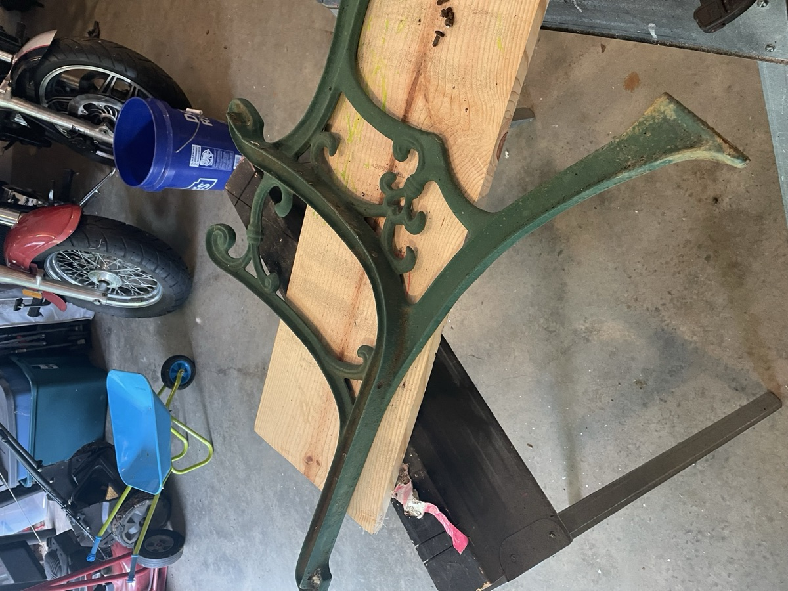

01
The frame, as found
Stripped & repainted
The cast-iron ends came in tired but solid. I took a wire brush and cleaner to every scroll and curve, worked them back to bare metal, primed, and repainted, hunting for the green that landed closest to the original.